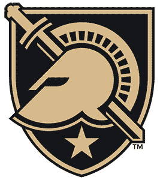

Big Ten
 Penn State
Penn State
Penn State is 2-8-1 and 58th in the NPI. Across 500 simulated seasons its median NPI finish is 47th, with a 95% range of 24th to 60th. ELO expects about 4 wins in the next 10.
Next 10 games
- Sat, Nov 14
 at Michigan19%
at Michigan19% - Fri, Nov 20
 at Wisconsin23%
at Wisconsin23% - Sat, Nov 21at Wisconsin23%
- Fri, Nov 27
 vs Princeton52%
vs Princeton52% - Thu, Dec 10

vs Army42% - Sat, Dec 12vs Army49%
- Thu, Dec 31
 vs Niagara61%
vs Niagara61% - Sat, Jan 2at Niagara46%
- Fri, Jan 8
 vs Ohio State52%
vs Ohio State52% - Sat, Jan 9vs Ohio State52%
Win chances from ELO; the dot is stronger the more lopsided the game.
Projected NPI finish
500 simulated seasons, remaining games decided by ELO win chances. Dashed line: median. Shaded: 95% range.